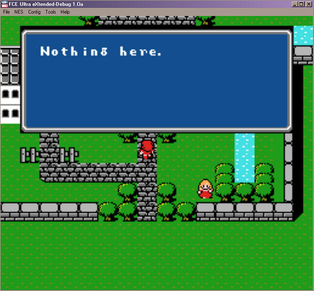
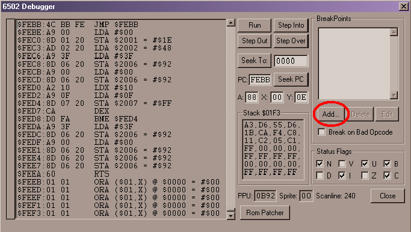
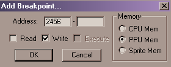
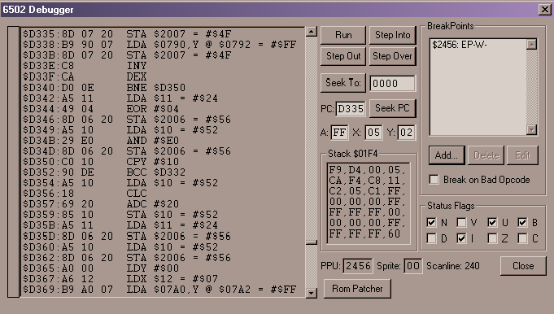
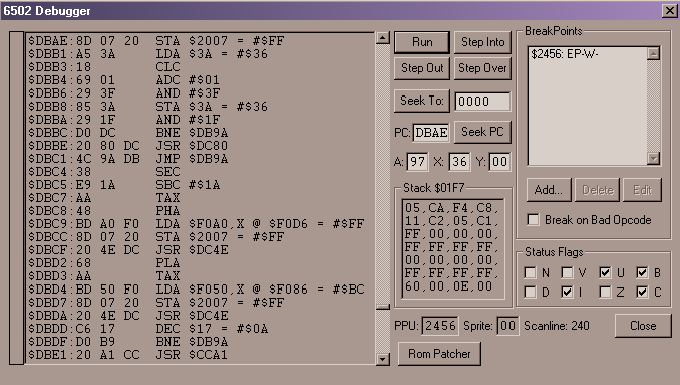
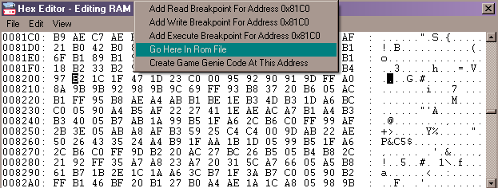

Por DaRKWiZaRDX
IMPORTANTE: Esta es sólo UNA de las tantas formas de encontrar una rutina de texto, quizás este método no sea el mejor y no te sirva para el juego que intentas traducir, si es así lo lamento, pregunta en algún foro si alguien puede ayudarte, pero por favor no quiero mails de "no pude encontrar la rutina".
¡Hola! En este documento explicaré cómo encontrar la rutina encargada de poner el texto en pantalla en una ROM de NES, utilizando el emulador/debugger FCEUXD (o mejor aún, FCEUXD SP), usaré como ejemplo la ROM "Final Fantasy (U)". Durante la explicación utilizaré el emulador FCEUXD, pero te recomiendo usar FCEUXD SP (en este caso es mejor), más adelante verás por qué. Cabe destacar que esta será la rutina de texto de UN juego en particular, y que probablemente nunca veas una rutina que sea exactamente igual a esta (tal vez en algún otro juego de Squaresoft, pero quién sabe), por lo que queda claro que esta no es la rutina universal, así como el método para hallarla tampoco es infalible, si bien me ha servido siempre que lo intenté. Final Fantasy 1 utiliza DTE y códigos de control, pero eso lo veremos en la rutina. Veamos cómo la encontramos.
Como lo que buscamos es la rutina que pone el texto en pantalla lo que deberíamos hacer es un breakpoint a la memoria de video, ¿que qué es un breakpoint? Es muy simple, es un comando que tienen la mayoría de los debuggers (depuradores xD), que le permite al usuario especificarle una posición de memoria, y en cuanto esa posición de memoria sea escrita/leída/ejecutada (en caso que sea código) detiene entonces la emulación para que el usuario pueda ver qué es lo que lee/escribe en esa posición.
Primero abriremos la ROM de Final Fantasy y comenzaremos la partida, mientras estás en un pueblo y pulsas el botón A (el botón de acción, en este juego) cuando no tengas nada ni nadie delante te aparecerá el siguiente mensaje:

Buscaremos el momento en que se pasa ese texto a la pantalla (a la memoria de video, más bien :P)
Para eso nos valdremos de los visores de PPU RAM, que pueden utilizarse desde el menú "Tools" -> "PPU Viewer" / "Name table viewer".
El PPU Viewer nos muestra todos los tiles que hay cargados en memoria (a esta zona se denomina "Pattern table") en este momento y de los cuales se puede valer el juego para dibujar la pantalla, si pausamos el juego (usando la tecla F2) y abrimos el PPU Viewer veremos todos los tiles que conforman la pantalla, a menos que el juego haya sido programado por extraterrestes. xD
El Name Table Viewer nos muestra cómo están organizados los tiles (que vimos con el PPU Viewer) en el "TileMap" para formar la pantalla que ve el usuario. Si nos ponemos sobre un tile en particular, nos aparecerá en el cuadro "Properties" (abajo a la derecha) el "Tile ID", que es el número de ese tile en cuestión en la Pattern Table (lo que vimos con el PPU Viewer), y, más importante para nuestros propósitos, la "PPU Address", que es la dirección de memoria donde se guardó el número de tile.
En este juego al usar el Name Table Viewer veremos toda la pantalla mezclada, esto es así porque el juego usa scrolling (no hace falta que lo entiendas para lo que estamos haciendo, si quieres aprender sobre esto busca en Romhacking.net
Nos posicionaremos sobre la primer 'N', el tile ID nos dirá 97. La PPU Address es $2456. Entonces pongamos un breakpoint que nos avise cuando se escriba en la posición $2456 de PPU RAM. Para hacer esto abriremos el debugger, mediante el menú "Tools" -> "Debug" (o la tecla F1 :P) y luego en la caja superior derecha (la que dice "breakpoints", obviamente xD) haremos clic en el botón "Add" y luego escribiremos en la primer caja que aparece la dirección (2456), dejamos la segunda vacía, marcamos "Write" (porque queremos saber cuándo se ESCRIBE) y marcamos "PPU Mem", ya que estamos trabajando con la memoria de video.
 
Aquí, si usamos FCEUXD SP, dispondremos también de una caja de texto para poner una condición, ahí podremos poner como condición "A == 97" para que el breakpoint sólo se dispare si al momento de escribirse en la dirección de memoria señalada el valor de A era $97, y podrás saltearte el siguiente párrafo (después de la imagen). Una vez puesto el breakpoint volvemos al juego y hablamos con el aire en el pueblo, el emulador se detendrá y el debugger saltará.

Qué extraño, ¿no? Es que está guardando A en VRAM (a través del puerto $2007), pero el valor contenido en A no es $97 (el valor de la 'N') sino $FF (un espacio en blanco). Esto sucede porque esta no es la rutina que pone el texto en pantalla, sino que es la rutina que dibuja el cuadro en blanco para luego poner el texto sobre él, primero se ponen los bordes, se llena todo de $FF (espacio en blanco) y DESPUÉS se empieza a pasar el texto, presiona el botón "Run" para que siga el juego, pero ni bien lo presiones se detendrá de nuevo el juego y volverá el debugger, y esta vez sí parece ser la correcta.

Digo que es la correcta porque como ves, está guardando el contenido de A en VRAM, y el contenido de A es $97. Hemos localizado la rutina que lee el texto y lo pasa a VRAM, antes de seguir con la emulación te recomiendo que abras el "Trace Logger" (menu Tools -> Trace Logger), y elijas que pase todo el trace a un fichero de texto (usando "Log to file"), luego pulsa "Start tracing", pero la emulación está detenida, así que quita el breakpoint (ya no lo necesitamos) usando el botón "Delete" y pulsa "Run", vuelve al trace logger cuando veas el texto en pantalla y pulsa "Stop logging" (sino el trace puede llegar fácilmente a los 30+ mb), luego abrimos nuestro trace (recomiendo usar UltraEdit, los demás programas que probé tardaban mucho o se colgaban xD) y busca en el trace la próxima escritura a VRAM (busca "STA $2007"), de ahí sabes que el juego está guardando en VRAM, pero necesitamos saber de dónde viene, entonces sube unas cuantas líneas hasta que veas un "LDA", este es el código que yo tengo:
$DB9C:B1 3E LDA ($3E),Y @ $8201 = #$B2
A:17 X:36 Y:00 P:nvUBdIZc
$DB9E:F0 C0 BEQ $DB60
A:B2 X:36 Y:00 P:NvUBdIzc
$DBA0:E6 3E INC $3E = #$01
A:B2 X:36 Y:00 P:NvUBdIzc
$DBA2:D0 02 BNE $DBA6
A:B2 X:36 Y:00 P:nvUBdIzc
$DBA6:C9 1A CMP #$1A
A:B2 X:36 Y:00 P:nvUBdIzc
$DBA8:90 4A BCC $DBF4
A:B2 X:36 Y:00 P:NvUBdIzC
$DBAA:C9 7A CMP #$7A
A:B2 X:36 Y:00 P:NvUBdIzC
$DBAC:90 16 BCC $DBC4
A:B2 X:36 Y:00 P:nvUBdIzC
$DBAE:8D 07 20 STA $2007 = #$FF
A:B2 X:36 Y:00 P:nvUBdIzC
Realmente espero que no te cueste entender lo que hace este código, lee un byte de un puntero (contenido en $3E) y lo pone en memoria, más al final de este documento veremos la rutina más detenidamente. Al leer de $8201 (si miras un mapa de memoria de la NES sabrás que es ROM) sabemos que no está leyendo de la memoria. Sólo basta con hacer un nuevo breakpoint, pero esta vez de lectura ("Read") en $8201 de CPU Mem, y otra vez hablamos con el aire, saltará el debugger, abrimos el editor hex (Tools -> Hex editor), nos posicionamos en $8201, hacemos clic derecho y elegimos "Go here in Rom File":

Como bonus, esto nos llevará a la zona de la ROM donde está el texto del juego :D ¡Hallamos la rutina!
Esta rutina fue extraída con el desensamblador "TRaCeR" y no tiene valores,
ya que no se hizo el trace mientras se ejecutaba el juego.
En algunos casos verás que hay un salto que va a una dirección y yo comento
otra, porque en este desensamblado se incluyó el header de $10 bytes de las
roms de NES, por lo que quizás veas que un JMP $DB9A lleva realmente a $DBAA.
07/DB74: AA TAX
; ]
07/DB75: A9 0A LDA #$0A ; ]_
Entrada la rutina, cambia el banco actual (no estoy 100% seguro de esto :P)
07/DB77: 85 57 STA $57 ; ]
07/DB79: 20 03 FE JSR $FE03 ; ]
07/DB7C: 8A TXA
; ]
07/DB7D: 0A ASL
; ]_ Multiplica X por 2, es para calcular el puntero (2 bytes cada uno)
07/DB7E: AA TAX
; ]
07/DB7F: B0 0D BCS $DB8E ; Si hay
carry carga los punteros en $DB8E
07/DB81: BD 00 80 LDA $8000,X ; ]
07/DB84: 85 3E STA $3E ;
]_ Sino carga los punteros de $8000,X / $8001,X
07/DB86: BD 01 80 LDA $8001,X ; ]
07/DB89: 85 3F STA $3F ; ]
07/DB8B: 4C 88 DB JMP $DB88 ; salta a DB98, ya tiene
los punteros cargados
07/DB8E: BD 00 81 LDA $8100,X ; ]
07/DB91: 85 3E STA $3E ;
]_ si había carry carga los punteros de $8100,X / $8101,X
07/DB93: BD 01 81 LDA $8101,X ; ]
07/DB96: 85 3F STA $3F ; ]
07/DB98: A9 0A LDA #$0A ; ]_
Un contador del juego para dibujar las ventanas
07/DB9A: 85 17 STA $17 ; ]
07/DB9C: 20 00 FE JSR $FE00 ; Creo que es un cambio de banco
07/DB9F: A5 38 LDA $38 ; ]
07/DBA1: 85 3A STA $3A ;
]_ Variables del juego, supongo :P
07/DBA3: A5 39 LDA $39 ; ]
07/DBA5: 85 3B STA $3B ; ]
07/DBA7: 20 80 DC JSR $DC80 ; Rutina que ubica el
puntero de VRAM ($2006)
07/DBAA: A0 00 LDY #$00 ; Pone Y
a 0, será usado como índice
07/DBAC: B1 3E LDA ($3E),Y ; Lee del puntero + Y
07/DBAE: F0 C0 BEQ $DB70 ; Si es 0,
salta a la rutina de fin de bloque de texto.
07/DBB0: E6 3E INC $3E ;
incrementa puntero de lectura
07/DBB2: D0 02 BNE $DBB6 ; ]_ Si $3E
era $FF entonces incrementa $3F (byte alto)
07/DBB4: E6 3F INC $3F ; ]
dicho de otra forma, "incrementa la unidad de centenas"
07/DBB6: C9 1A CMP #$1A ;
compara el byte leido con #$1A
07/DBB8: 90 4A BCC $DC04 ; si es
menor, es un código de control, salta a $DC04
07/DBBA: C9 7A CMP #$7A ;
compara el byte leido con #$7A
07/DBBC: 90 16 BCC $DBD4 ; si es
menor, es DTE, salta a $DBD4
07/DBBE: 8D 07 20 STA $2007 ; si es una letra normal la
guarda en VRAM
07/DBC1: A5 3A LDA $3A ; ]
07/DBC3: 18 CLC
; ]
07/DBC4: 69 01 ADC #$01 ; ]_
Verifica que no se haya pasado de largo la línea, si no es así, vuelve a $DBAA
07/DBC6: 29 3F AND #$3F ; ]
a leer otra letra y seguir con la rutina, sino, salta a la rutina $DB80 para
07/DBC8: 85 3A STA $3A ; ]
posicionar el puntero de VRAM en una línea nueva.
07/DBCA: 29 1F AND #$1F ; ]
07/DBCC: D0 DC BNE $DBAA ; ]
07/DBCE: 20 80 DC JSR $DC80 ; posiciona el
puntero de VRAM
07/DBD1: 4C 9A DB JMP $DB9A ; salta a $DBAA, a leer otra letra de ROM.
07/DBD4: 38 SEC
; ]_ resta #$1A, valor del primer DTE
07/DBD5: E9 1A SBC #$1A ; ]
07/DBD7: AA TAX
; pasa A a X, que será el índice de lectura
07/DBD8: 48 PHA
; guarda A en la pila
07/DBD9: BD A0 F0 LDA $F0A0,X ; lee el primer byte del DTE de $F0A0,X
07/DBDC: 8D 07 20 STA $2007 ; lo guarda en VRAM
07/DBDF: 20 4E DC JSR $DC4E ; DC4E, rutina que verifica
que no se haya pasado de línea y ubica el puntero de VRAM
07/DBE2: 68 PLA
; recupera A de la pila (la letra leída - #$1A)
07/DBE3: AA TAX
; lo pasa a A
07/DBE4: BD 50 F0 LDA $F050,X ; lee el segundo byte del DTE de $F050,X
07/DBE7: 8D 07 20 STA $2007 ; lo guarda en VRAM
07/DBEA: 20 4E DC JSR $DC4E ; nueva llamada a la rutina
que ubica el puntero de VRAM
07/DBED: C6 17 DEC $17
07/DBEF: D0 B9 BNE $DBAA
07/DBF1: 20 A1 CC JSR $CCA1 ; rutina que pone el
scrolling de pantalla
07/DBF4: 20 89 C6 JSR $C689 ; esta rutina no estoy muy
seguro de qué hace :P (al menos soy sincero xDDD)
; manipula varias variables de memoria entre $6000-$6010.
07/DBF7: 20 00 FE JSR $FE00 ; cambio de banco
07/DBFA: A9 0A LDA #$0A ; ]_
Pone el contador en $17 a su valor #$0A
07/DBFC: 85 17 STA $17 ; ]
07/DBFE: 20 80 DC JSR $DC80 ; ubica el puntero de VRAM
07/DC01: 4C 9A DB JMP $DB9A ; salta a $DBAA (leer
siguiente letra de ROM)
Algunas secciones de la rutina no las expliqué (son demasiado oscuras para mí xD) aunque no creo que tengan que ver con el texto que se muestra en pantalla, sino con variables internas del juego, en todo caso, si llego a descubrir algo sobre estas subrutinas actualizaré esta guía. Cualquier comentario/pregunta/etc. puede ser enviado a mi mail ^^